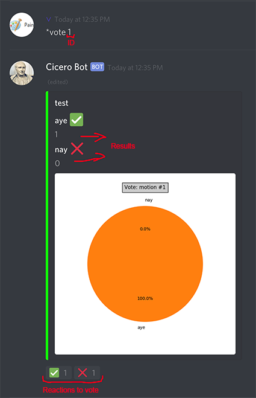

Motions & the senate meeting
The "*motion" command let's a user create a motion. the command should be followed by a text body for the motion (above we use "test"). The command also collects some other metadata such as the user who created it and the time of creation
The "*motions" command let's a user view all the the motions that still need to be resolved. The overview shows motion id, date of creation, creator, content and the amount of aye or nay votes if the motion has been voted on so far
The "*resolve" command let's a user resolve the command with the id provided
 The "*vote" command let's a user with the correct permissions start voting on the motion with the provided id. The results will be shown in an embed alongside the pie chart. Users can then react with 1 of the emojis to cast their vote.